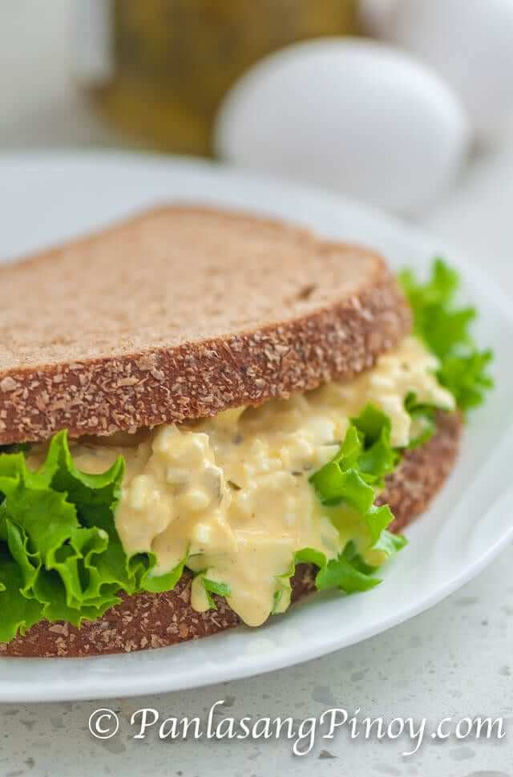

Egg sandwich

Description
This Egg Sandwich Spread recipe is quick and easy to prepare. Once you have all the ingredients ready,
all you need is to mash the eggs and add all the ingredients together. I used 6 eggs for this recipe, you can use up to 8 eggs if you
want — this will make the texture thicker. The mustard powder is also a good addition, but you can omit this ingredient if it is not
available. As for the onion powder, I use this ingredient if I want to keep the sandwich spread longer. I would prefer fresh minced
onions, but it tends to spoil faster.
Ingredients
- 6 hard boiled eggs
- 1/4 cup mayonnaise
- 1/4 cup sweet pickle relish
- 1 teaspoon white sugar
- 1/2 teaspoon dry mustard powder
- 1/2 teaspoon onion powder
- 1/2 teaspoon salt
- 1/8 teaspoon ground black pepper (optional)
Steps on making a cookie
- Place the eggs in a bowl. Mash using a fork.
- Add mayonnaise, sugar, mustard powder, onion powder, salt, and pepper. Fold until all the ingredients are well blended.
- Add the sweet pickle relish. Fold once more until the pickles blends with the other ingredients.
- Transfer in a container. Refrigerate for 1 hour, or you can use it immediately. Spread over your favorite slice of bread.
- Share. Share and enjoy!
Home